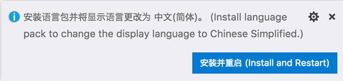
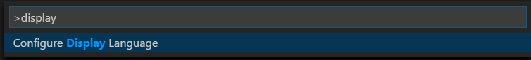
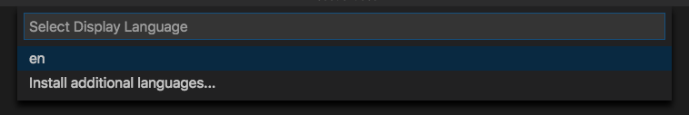
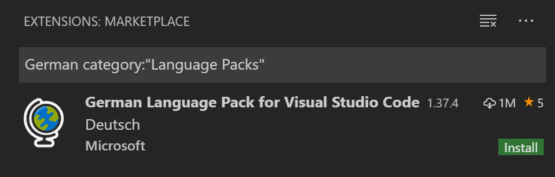

Display Language
Visual Studio Code ships by default with English as the display language and other languages rely on Language Pack extensions available from the Marketplace.
VS Code detects the operating system's UI language and will prompt you to install the appropriate Language Pack, if available on the Marketplace. Below is an example recommending a Simplified Chinese Language Pack:

After installing the Language Pack extension and following the prompt to restart, VS Code will use the Language Pack matching your operating system's UI language.
Changing the Display Language
You can also override the default UI language by explicitly setting the VS Code display language using the Configure Display Language command.
Press kb(workbench.action.showCommands) to bring up the Command Palette then start typing "display" to filter and display the Configure Display Language command.

Press kbstyle(Enter) and a list of installed languages by locale is displayed, with the current locale highlighted.

Use the Install additional languages... option to install more Language Packs from the Marketplace, or select a different locale from the list. Changing the locale requires a restart of VS Code. You will be prompted to restart when you select a locale.
The Configure Display Language command writes to the Runtime Configuration Arguments file argv.json in your user VS Code folder (.vscode).
The locale can also be changed by editing the argv.json file directly (Preferences: Configure Runtime Arguments) and restarting VS Code.
Available locales
| Display Language | Locale |
|---|---|
| English (US) | en |
| Simplified Chinese | zh-CN |
| Traditional Chinese | zh-TW |
| French | fr |
| German | de |
| Italian | it |
| Spanish | es |
| Japanese | ja |
| Korean | ko |
| Russian | ru |
| Bulgarian | bg |
| Hungarian | hu |
| Portuguese (Brazil) | pt-br |
| Turkish | tr |
Marketplace Language Packs
As described above, VS Code ships with English as the default display language, but other languages are available through Marketplace Language Packs.
You can search for Language Packs in the Extensions view (kb(workbench.view.extensions)) by typing the language you are looking for along with category:"Language Packs".

You can have multiple Language Packs installed and select the current display language with the Configure Display Language command.
Setting the Language
If you want to use a specific language for a VS Code session, you can use the command-line switch --locale to specify a locale when you launch VS Code.
Below is an example of using the --locale command-line switch to set the VS Code display language to French:
code . --locale=fr
Note: You must have the appropriate Language Pack installed for the language you specify with the command-line switch. If the matching Language Pack is not installed, VS Code will display English.
Common questions
Unable to write to file because the file is dirty
This notification may mean that your argv.json file wasn't saved after a previous change. Check if there are any errors in the file (Preferences: Configure Runtime Arguments), make sure the file is saved, and try to install the Language Pack again.
Can I contribute to a language pack's translations?
Yes, the Visual Studio Code Community Localization Project is open to anyone, where contributors can provide new translations, vote on existing translations, or suggest process improvements.